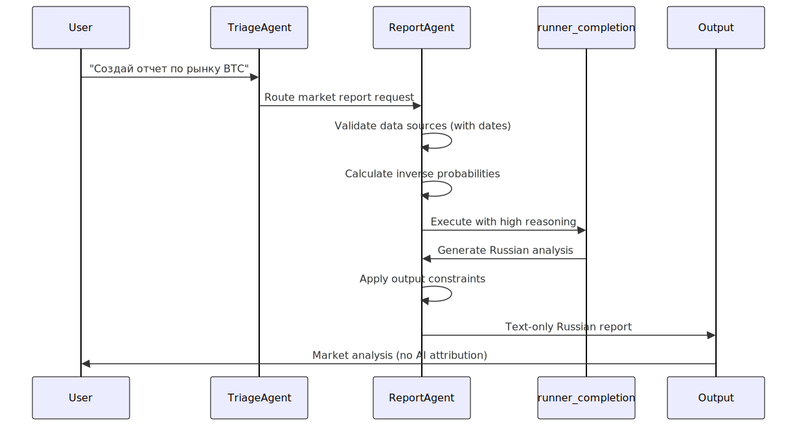

The Report Agent is an internal cryptocurrency market analysis tool within the Signal trading system's agent swarm architecture. This agent specializes in generating market analysis reports with Russian-language output formatting and specific probability calculation logic for risk assessment.
For information about other agents in the swarm system, see Triage Agent and Cryptocurrency Consultant Agents.
The Report Agent is configured as part of the AI swarm schema system with specific behavioral parameters and completion settings.
| Parameter | Value | Purpose |
|---|---|---|
| Completion Method | runner_completion |
Execution framework for agent responses |
| Language Requirement | Russian (Всегда пиши ответ на русском языке) |
Mandatory Russian language output |
| Reasoning Level | high |
Enhanced analytical depth |
| Operator Status | [ ] (unchecked) |
Current operational state |

The Report Agent operates with a structured prompt system designed for internal market analysis with specific output constraints.
The agent's primary directive defines its role as an internal cryptocurrency market analysis tool:
Ты внутренний инструмент анализа рынка криптоактивов. Ответь на поставленный вопрос экономя число слов, по существу.
This establishes the agent as a concise, focused analysis tool that prioritizes brevity and relevance in responses.

The Report Agent implements specific logic for market analysis reporting with probability calculations and output formatting requirements.
The agent employs an inverse probability model for risk assessment:
| Calculation Type | Formula | Purpose |
|---|---|---|
| Growth Probability | 100% - Fall Risk Percentage |
Optimistic bias display |
| Risk Inversion | Inverse of fall risk probability |
Counter-risk presentation |
| Data Validation | Date-verified sources only |
Temporal accuracy requirement |

The Report Agent operates within the broader agent swarm architecture, receiving requests through the routing system and providing specialized analysis capabilities.

The Report Agent depends on the agent_schema_report_agent configuration system, which defines its operational parameters and behavioral constraints within the swarm architecture.
The Report Agent is implemented as part of the AI swarm schema system with specific completion flags and operational constraints that distinguish it from other agents in the system.
runner_completion - Utilizes the standard agent completion frameworkhigh - Enables enhanced analytical processingThe agent's schema includes visual documentation referenced at ../image/agent_schema_report_agent.svg, indicating a structured architectural representation within the broader agent system.